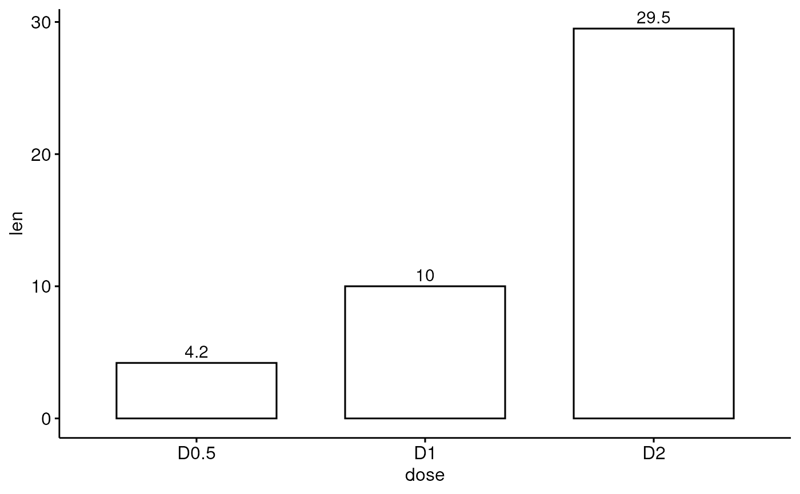
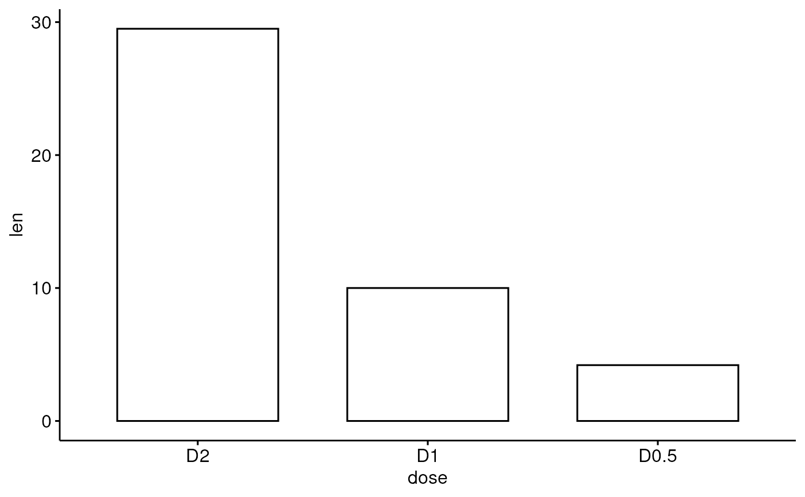
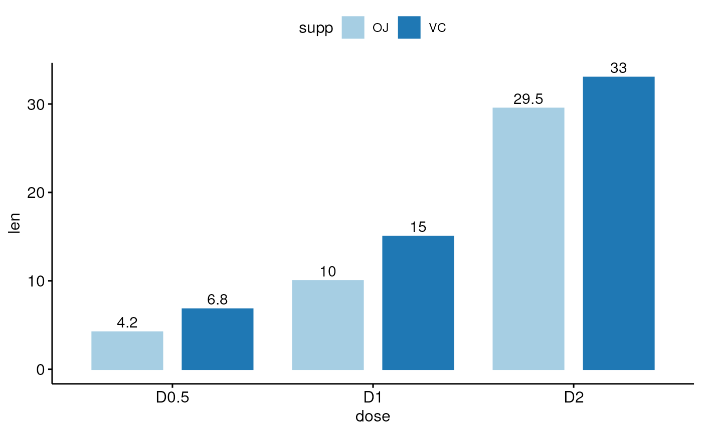
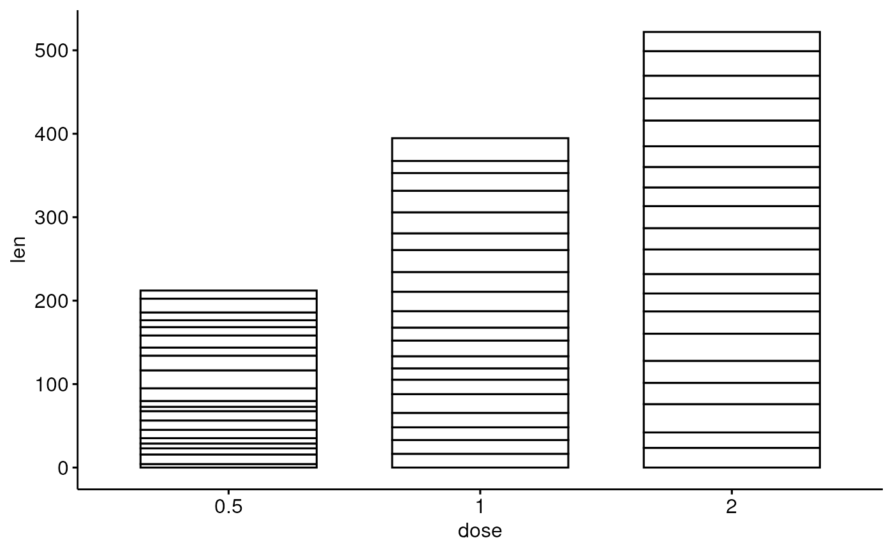
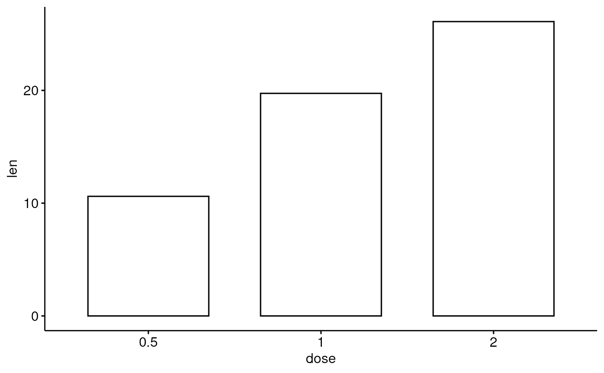
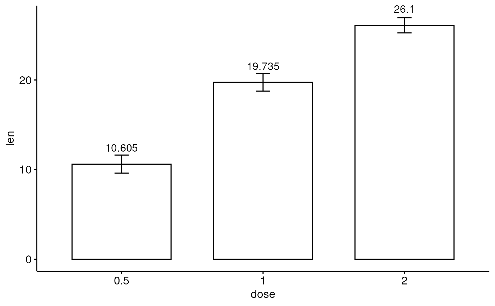
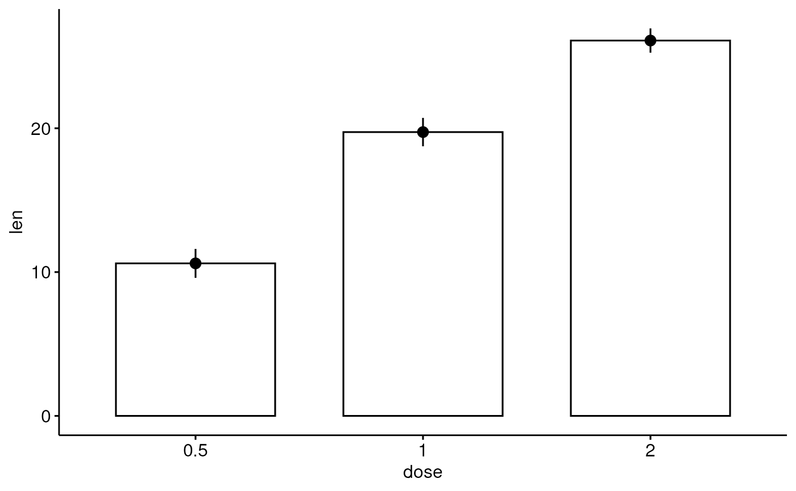
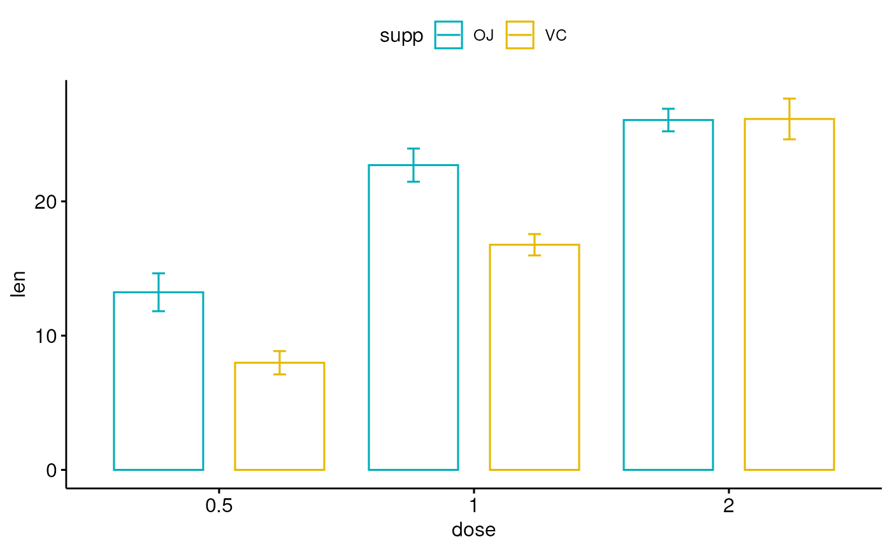

Bar plot
ggbarplot.RdCreate a bar plot.
ggbarplot(data, x, y, combine = FALSE, merge = FALSE, color = "black", fill = "white", palette = NULL, size = NULL, width = NULL, title = NULL, xlab = NULL, ylab = NULL, facet.by = NULL, panel.labs = NULL, short.panel.labs = TRUE, select = NULL, remove = NULL, order = NULL, add = "none", add.params = list(), error.plot = "errorbar", label = FALSE, lab.col = "black", lab.size = 4, lab.pos = c("out", "in"), lab.vjust = NULL, lab.hjust = NULL, lab.nb.digits = NULL, sort.val = c("none", "desc", "asc"), sort.by.groups = TRUE, top = Inf, position = position_stack(), ggtheme = theme_pubr(), ...)
Arguments
| data | a data frame |
|---|---|
| x, y | x and y variables for drawing. |
| combine | logical value. Default is FALSE. Used only when y is a vector containing multiple variables to plot. If TRUE, create a multi-panel plot by combining the plot of y variables. |
| merge | logical or character value. Default is FALSE. Used only when y is a vector containing multiple variables to plot. If TRUE, merge multiple y variables in the same plotting area. Allowed values include also "asis" (TRUE) and "flip". If merge = "flip", then y variables are used as x tick labels and the x variable is used as grouping variable. |
| color, fill | outline and fill colors. |
| palette | the color palette to be used for coloring or filling by groups. Allowed values include "grey" for grey color palettes; brewer palettes e.g. "RdBu", "Blues", ...; or custom color palette e.g. c("blue", "red"); and scientific journal palettes from ggsci R package, e.g.: "npg", "aaas", "lancet", "jco", "ucscgb", "uchicago", "simpsons" and "rickandmorty". |
| size | Numeric value (e.g.: size = 1). change the size of points and outlines. |
| width | numeric value between 0 and 1 specifying box width. |
| title | plot main title. |
| xlab | character vector specifying x axis labels. Use xlab = FALSE to hide xlab. |
| ylab | character vector specifying y axis labels. Use ylab = FALSE to hide ylab. |
| facet.by | character vector, of length 1 or 2, specifying grouping variables for faceting the plot into multiple panels. Should be in the data. |
| panel.labs | a list of one or two character vectors to modify facet panel labels. For example, panel.labs = list(sex = c("Male", "Female")) specifies the labels for the "sex" variable. For two grouping variables, you can use for example panel.labs = list(sex = c("Male", "Female"), rx = c("Obs", "Lev", "Lev2") ). |
| short.panel.labs | logical value. Default is TRUE. If TRUE, create short labels for panels by omitting variable names; in other words panels will be labelled only by variable grouping levels. |
| select | character vector specifying which items to display. |
| remove | character vector specifying which items to remove from the plot. |
| order | character vector specifying the order of items. |
| add | character vector for adding another plot element (e.g.: dot plot or error bars). Allowed values are one or the combination of: "none", "dotplot", "jitter", "boxplot", "point", "mean", "mean_se", "mean_sd", "mean_ci", "mean_range", "median", "median_iqr", "median_mad", "median_range"; see ?desc_statby for more details. |
| add.params | parameters (color, shape, size, fill, linetype) for the argument 'add'; e.g.: add.params = list(color = "red"). |
| error.plot | plot type used to visualize error. Allowed values are one of c("pointrange", "linerange", "crossbar", "errorbar", "upper_errorbar", "lower_errorbar", "upper_pointrange", "lower_pointrange", "upper_linerange", "lower_linerange"). Default value is "pointrange" or "errorbar". Used only when add != "none" and add contains one "mean_*" or "med_*" where "*" = sd, se, .... |
| label | specify whether to add labels on the bar plot. Allowed values are:
|
| lab.col, lab.size | text color and size for labels. |
| lab.pos | character specifying the position for labels. Allowed values are "out" (for outside) or "in" (for inside). Ignored when lab.vjust != NULL. |
| lab.vjust | numeric, vertical justification of labels. Provide negative value (e.g.: -0.4) to put labels outside the bars or positive value to put labels inside (e.g.: 2). |
| lab.hjust | numeric, horizontal justification of labels. |
| lab.nb.digits | integer indicating the number of decimal places (round) to be used. |
| sort.val | a string specifying whether the value should be sorted. Allowed values are "none" (no sorting), "asc" (for ascending) or "desc" (for descending). |
| sort.by.groups | logical value. If TRUE the data are sorted by groups. Used only when sort.val != "none". |
| top | a numeric value specifying the number of top elements to be shown. |
| position | Position adjustment, either as a string, or the result of a call to a position adjustment function. |
| ggtheme | function, ggplot2 theme name. Default value is theme_pubr(). Allowed values include ggplot2 official themes: theme_gray(), theme_bw(), theme_minimal(), theme_classic(), theme_void(), .... |
| ... | other arguments to be passed to be passed to ggpar(). |
Details
The plot can be easily customized using the function ggpar(). Read ?ggpar for changing:
main title and axis labels: main, xlab, ylab
axis limits: xlim, ylim (e.g.: ylim = c(0, 30))
axis scales: xscale, yscale (e.g.: yscale = "log2")
color palettes: palette = "Dark2" or palette = c("gray", "blue", "red")
legend title, labels and position: legend = "right"
plot orientation : orientation = c("vertical", "horizontal", "reverse")
See also
Examples
#> dose len #> 1 D0.5 4.2 #> 2 D1 10.0 #> 3 D2 29.5# Basic plot with label outsite # +++++++++++++++++++++++++++ ggbarplot(df, x = "dose", y = "len", label = TRUE, label.pos = "out")# Change width ggbarplot(df, x = "dose", y = "len", width = 0.5)# Change the plot orientation: horizontal ggbarplot(df, "dose", "len", orientation = "horiz")# Change colors # +++++++++++++++++++++++++++ # Change fill and outline color # add labels inside bars ggbarplot(df, "dose", "len", fill = "steelblue", color = "steelblue", label = TRUE, lab.pos = "in", lab.col = "white")# Change colors by groups: dose # Use custom color palette ggbarplot(df, "dose", "len", color = "dose", palette = c("#00AFBB", "#E7B800", "#FC4E07"))# Change fill and outline colors by groups ggbarplot(df, "dose", "len", fill = "dose", color = "dose", palette = c("#00AFBB", "#E7B800", "#FC4E07"))# Plot with multiple groups # +++++++++++++++++++++ # Create some data df2 <- data.frame(supp=rep(c("VC", "OJ"), each=3), dose=rep(c("D0.5", "D1", "D2"),2), len=c(6.8, 15, 33, 4.2, 10, 29.5)) print(df2)#> supp dose len #> 1 VC D0.5 6.8 #> 2 VC D1 15.0 #> 3 VC D2 33.0 #> 4 OJ D0.5 4.2 #> 5 OJ D1 10.0 #> 6 OJ D2 29.5# Plot "len" by "dose" and change color by a second group: "supp" # Add labels inside bars ggbarplot(df2, "dose", "len", fill = "supp", color = "supp", palette = "Paired", label = TRUE, lab.col = "white", lab.pos = "in")# Change position: Interleaved (dodged) bar plot ggbarplot(df2, "dose", "len", fill = "supp", color = "supp", palette = "Paired", label = TRUE, position = position_dodge(0.9))# Add points and errors # ++++++++++++++++++++++++++ # Data: ToothGrowth data set we'll be used. df3 <- ToothGrowth head(df3, 10)#> len supp dose #> 1 4.2 VC 0.5 #> 2 11.5 VC 0.5 #> 3 7.3 VC 0.5 #> 4 5.8 VC 0.5 #> 5 6.4 VC 0.5 #> 6 10.0 VC 0.5 #> 7 11.2 VC 0.5 #> 8 11.2 VC 0.5 #> 9 5.2 VC 0.5 #> 10 7.0 VC 0.5# It can be seen that for each group we have # different values ggbarplot(df3, x = "dose", y = "len")# Visualize the mean of each group ggbarplot(df3, x = "dose", y = "len", add = "mean")# Add error bars: mean_se # (other values include: mean_sd, mean_ci, median_iqr, ....) # Add labels ggbarplot(df3, x = "dose", y = "len", add = "mean_se", label = TRUE, lab.vjust = -1.6)# Use only "upper_errorbar" ggbarplot(df3, x = "dose", y = "len", add = "mean_se", error.plot = "upper_errorbar")# Change error.plot to "pointrange" ggbarplot(df3, x = "dose", y = "len", add = "mean_se", error.plot = "pointrange")# Add jitter points and errors (mean_se) ggbarplot(df3, x = "dose", y = "len", add = c("mean_se", "jitter"))#># Multiple groups with error bars and jitter point ggbarplot(df3, x = "dose", y = "len", color = "supp", add = "mean_se", palette = c("#00AFBB", "#E7B800"), position = position_dodge())